This page brings together basic information about the Devanagari script and its use for the Hindi language. It aims to provide a brief, descriptive summary of the modern, printed orthography and typographic features, and to advise how to write Hindi using Unicode.
Select part of this sample text to show a list of characters, with links to more details.
Change size: 36px
अनुच्छेद १. सभी मनुष्यों को गौरव और अधिकारों के मामले में जन्मजात स्वतन्त्रता और समानता प्राप्त है । उन्हें बुद्धि और अन्तरात्मा की देन प्राप्त है और परस्पर उन्हें भाईचारे के भाव से बर्ताव करना चाहिए ।
अनुच्छेद २. सभी को इस घोषणा में सन्निहित सभी अधिकारों और आज़ादियों को प्राप्त करने का हक़ है और इस मामले में जाति, वर्ण, लिंग, भाषा, धर्म, राजनीति या अन्य विचार-प्रणाली, किसी देश या समाज विशेष में जन्म, सम्पत्ति या किसी प्रकार की अन्य मर्यादा आदि के कारण भेदभाव का विचार न किया जाएगा । इसके अतिरिक्त, चाहे कोई देश या प्रदेश स्वतन्त्र हो, संरक्षित हो, या स्त्रशासन रहित हो या परिमित प्रभुसत्ता वाला हो, उस देश या प्रदेश की राजनैतिक, क्षेत्रीय या अन्तर्राष्ट्रीय स्थिति के आधार पर वहां के निवासियों के प्रति कोई फ़रक़ न रखा जाएगा ।
Devanagari is used in India and Nepal for almost 200 languages, making it the fourth most widely adopted writing system in the world. Among the others, it is the script used for writing Sanskrit and Hindi.
देवनागरी
Devanagari is a descendant of the 3rd century BCE Brahmi script through the Gupta script and then the closely related Nagari script. The modern standardised form of Devanagari was in use by about 1000 CE. An early version in the Kutila inscription of Bareilly, dated to 992 CE, demonstrates the emergence of the horizontal bar to group letters belonging to a word.
It has long been used traditionally by religiously educated people throughout South Asia to record and transmit information, and often appears in parallel with a wide variety of local scripts.
Devanagari is an abugida. Consonant letters have an inherent vowel sound. Combining vowel signs are attached to the consonant to indicate that a different vowel follows the consonant. See the table in the right-hand column for a brief overview of features of the Hindi language.
Devanagari text runs left-to-right in horizontal lines.
Orthographic syllables (as opposed to phonetic syllables) play a significant role in Devanagari. An orthographic syllable starts at the beginning of any cluster of consonants and incorporates the whole cluster plus any following vowels and diacritics.
Phonetically, Hindi, like other Indic languages, has four forms of plosives, illustrated here with the bilabial stop: unvoiced p, voiced b, aspirated pʰ, and murmured bʱ. It also has a set of retroflex consonants. These are all represented separately in the orthography.
The 33 consonant letters used for Hindi are supplemented by repertoire extensions for 8 more non-native sounds by applying the nukta diacritic to characters.
Consonant clusters at any location are normally indicated using the virama between consonants. This results in a large number of conjunct forms expressed using half-forms, stacked consonants, and ligated glyphs. Occasionally, a visible virama is used.
As part of a cluster, RA has special forms. When initial in an orthographic syllable it appears as a hook at the top right of the whole syllable. When non-initial it appears as one of 2 special marks applied to the other consonants.
Word-final consonant sounds may be represented by 2 dedicated combining marks (anusvara & visarga), but are generally ordinary consonants that are not marked by a virama. Also, the inherent vowel of a penultimate consonant in a word of 3 syllables that ends in a non-inherent vowel is usually elided, and not marked as such.
The Hindi orthography is an abugida with one inherent vowel. It represents other post-consonant vowels using 11 vowel signs. All are combining marks, and a single Unicode character is used per base consonant.
The Unicode Devanagari block contains more characters than other indic scripts, partly because it serves as a pivot script for transliterations of other scripts.
Hindi, like other Indic languages, has four forms of plosives, illustrated here with the bilabial stop: unvoiced p, voiced b, aspirated pʰ, and murmured bʱ. It also has a set of retroflex consonants.
v and w are allophones of ʋ in Hindi. w typically occurs between a consonant and vowel,wp,#Allophony_of_[v]_and_[w] eg. compare पकवानव्रत
The effective unit of the writing systems is the orthographic syllable, consisting of a consonant and vowel (CV) core and, optionally, one or more preceding consonants, with a canonical structure of (((C)C)C)V.u
Consonant letters by themselves constitute a CV unit, where the V is an inherent vowel, whose exact phonetic value may vary by writing system. Independent vowels also constitute a CV unit, where the C is considered to be null. A dependent vowel sign is used to represent a V in CV units where C is not null and V is not the inherent vowel. u
In some cases, a phonological diphthong, such as Hindi जाओɟāọ̄ is actually written as two orthographic CV units, where the second of these units is an independent vowel letter. u
Two diacritics (generally classified as vowels) can be used to represent a syllable-final nasal or an unvoiced aspiration. Medial consonants are catered for by the consonant cluster model. Diacritics are also used to nasalise vowel sounds.
Vowels
Vowel summary table
The following table summarises the main vowel to character assigments.
ⓘ represents the inherent vowel. Dependent vowels are on the left, standalone vowels on the right. Diacritics are added to the vowels to indicate nasalisation (not shown here).
Hindi uses the following dedicated combining marks, called vowel signs, to write vowels.
ि␣ी␣ु␣ू␣े␣ो␣ै␣ौ␣ा
It also includes 2 vowel signs used for sounds in foreign (especially English) loan words.
ॅ␣ॉ
Six vowel signs are spacing combining characters, meaning that they consume horizontal space when added to a base consonant.
All vowel signs are typed and stored after the base consonant, and the rendering process puts them in the correct place for display.
An orthography that uses vowel signs is different from one that uses simple diacritics or letters for vowels, in that the vowel signs are generally attached to an orthographic syllable, rather than just applied to the letter of the immediately preceding consonant. In other words, pre-base vowel sign components are rendered before a whole consonant cluster if that cluster is rendered as a conjunct (see prebase for an example).
Pre-base vowel sign
कि
kiU+0915 DEVANAGARI LETTER KA + U+093F DEVANAGARI VOWEL SIGN I
One vowel sign appears to the left of the base consonant letter or cluster.
ि
This is a combining mark that is always typed and stored after the base consonant(s), ie. the codepoints follow the order in which the items are pronounced. The rendering process places the glyph before the base consonant without changing the code points. Click on the following word to see the sequence of characters in storage.
दिन
It is actually placed before the start of an orthographic syllable. In fig_prebase the sequence of glyphs for the orthographic syllable is rendered VCC, whereas the pronunciation is CCV. In conjuncts with 3 consonants, it will still be rendered before the consonants.
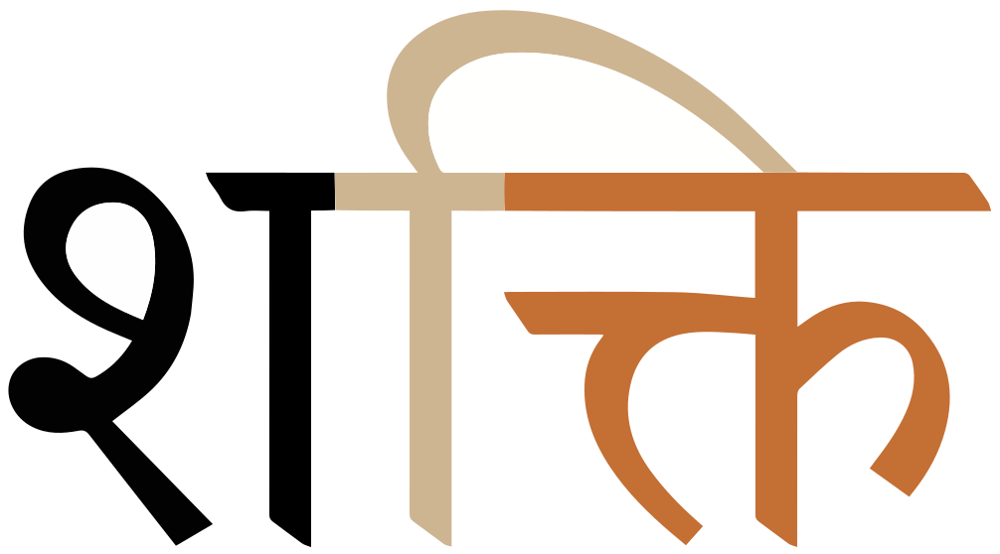
A prebase vowel, pronounced after a consonant cluster, but rendered to the left of the conjunct.show composition
शक्ति
However, if the cluster is split by a visible virama, this creates two syllables and the pre-base vowel sign appears after the last consonant with the virama. The sequence of displayed glyphs is now CVC. If the conjunct contains 3 consonants, the displayed order will be CCVC.
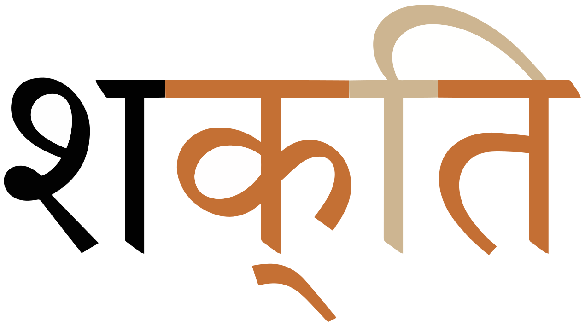
The same word, but without the conjunct. The vowel is now rendered to the left of the last consonant in the cluster.show composition
When a vowel sign rises above the head line, the glyph for this character may be simplified to just a dots, which can be written using
ं [U+0902 DEVANAGARI SIGN ANUSVARA] instead of candrabindu, eg.
हैं
Devanagari represents standalone vowels using a set of ‘independent vowel’ letters. The set contains a character to represent the inherent vowel sound.
Independent vowels used by Hindi:
इ␣ई␣उ␣ऊ␣ए␣अ␣ओ␣ऐ␣औ␣आ
Two more are used for sounds in loan words.
ऍ␣ऑ
The following combinations are also regarded as letters of the alphabet.
अं␣अः␣अँ
Examples:
ईंधन
कटाई
ऑफ़िस
अँगरेज़ी
Note the sound difference between the use of a standalone vowel vs. a vowel sign after a consonant:
नईnị̄nəiːनीnīniː
Vowel absence
The inherent vowel is not always pronounced. For example in Hindi it is not usually pronounced at the end of a word,
although a ghost echo may appear after a word-final cluster of consonants, eg.
योग्यराष्ट्र
In addition Hindi has a general rule that when a word has three or more syllables and ends in a vowel other than the inherent a, the penultimate vowel is not pronounced, eg. compareसमझsmjʱsəməɟʱसमझाsmjʱāsəmɟʱaːandरहनrhnrəhənरहनाrhnārəhnaː
(For a number of reasons, however, this rule does not always hold.)
्
Devanagari uses ् [U+094D DEVANAGARI SIGN VIRAMA] (called halant in Hindi) to kill the inherent vowel after a consonant. The virama is rarely seen. As just mentioned, no virama is used at the end of a word, or in the penultimate syllable where the above rules apply. The virama is also usually hidden when the consonant is part of a consonant cluster (see clusters). The virama is visible, however, if it isn't followed by a consonant, eg. the following explicitly represents just the sound k,क्k͓
Vowel sounds to characters
This section maps Hindi vowel sounds to common graphemes in the Devanagari orthography.
The left column shows dependent vowels, and the right column independent vowel letters.
Click on a grapheme to find other mentions on this page (links appear at the bottom of the page). Click on the character name to see examples and for detailed descriptions of the character(s) shown.
Hindi also counts 3 character combinations as consonantal letters of the alphabet.
त्र␣ज्ञ␣क्ष
Repertoire extension
़
़ [U+093C DEVANAGARI SIGN NUKTA] is used to represent foreign sounds, eg. in the following example the dot changes खkʱ to ख़xख़ारीदारी
A list of graphemes used in Hindi that combine nukta with an existing consonant. These are all counted as letters of the Hindi alphabet. The 5th one is very rare.
क़␣फ़␣ज़␣झ़␣श़␣ख़␣ग़␣ड़␣ढ़
The nukta should always be typed and stored immediately after the consonant it modifies, and before any combining vowels or diacritics.
The Unicode block also contains the following precomposed code points for the sequences used in Hindi.
क़␣फ़␣ज़␣ख़␣ग़␣ड़␣ढ़
The Unicode Standard recommends not to use the precomposed code points for Hindi, but instead to use the base+nukta sequences. See also nukta_encoding for more information.
Onsets
Clusters of consonant letters at the beginning of an orthographic syllable occur in Hindi, and they are handled as described in the section clusters.
Special behaviours include handling of RA at the beginning of an orthographic syllable (see rconjuncts).
Finals
Although traditionally classified as vowels, 2 diacritics represent syllable-final consonant sounds.
ं␣ः
Nasal sounds m n ŋ that are homorganic with a following consonant are commonly written using ं [U+0902 DEVANAGARI SIGN ANUSVARA]. This mark is positioned over the previous consonant, eg.
हिंदी
Most words that use the anusvara can also be written using the consonant itself, eg.
हिन्दी
In some cases, however, the anusvara form is more common. For example, the first of the two following alternatives is much more common
पंजाब*पञ्जाब
Some words, mostly Sanskrit loan words, may end with a voiceless h after a vowel which can be written using ः [U+0903 DEVANAGARI SIGN VISARGA], eg.
पुनःदुःखी
See also the candrabindu diacritic, which nasalises a vowel.
Consonant clusters
The absence of a vowel sound between two or more consonants can be visually indicated in one of the following ways.
Create a conjunct. There are a number of possibilities here:
Half-forms : Reduce the shape of all consonants in the cluster except the last to a 'half-form' by removing the vertical stroke.
Stacking : Reduce a non-initial consonant in size and shape and position it below the first.
Special ligation : Create a fusion of the two shapes, where one or other of the components may not be easily recognisable.
The letter ra has its own idiosyncratic way of combining with other consonants, whether it precedes or follows them.
Show a visible virama below the non-final consonants in the cluster.
No indication, although there are usually generalised pronunciation rules that allow readers to spot these locations. Examples of these rules are given in the section about the inherent vowel.
The font usually determines which visual method is used, although it is possible to influence this (see joiner).
Click on the figures below to see which characters are being shown.
Conjoined half-forms
A half-form is typically created by removing the vertical line in the consonant shape, where there is one. (The vertical line is associated with the inherent vowel, and around two-thirds of Devanagari consonant shapes contain one.) There is often some additional tweaking of glyphs in order to join the components neatly. The last consonant in the cluster retains its full shape.
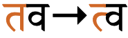
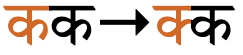
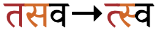
Examples of conjuncts formed by using half-forms.
A small number of half-forms are only minimally different from side-by-side characters.
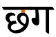
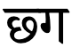
An example of a conjunct with a subtle difference between separate consonants with intervening vowel (left), and a conjunct cluster (right). The difference is highlighted on the left.
Vertical stacks
This is more common for Sanskrit, and few modern fonts reorder glyphs in this way, or do so for a limited number of combinations.
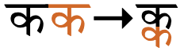
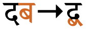
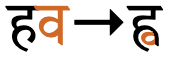
Conjuncts formed by subjoining non-initial consonants.
Ligated conjuncts
Typically, only a small number of clusters are combined in a way that makes it difficult to spot the component parts. This is, however, the default for two particular clusters: क्षk͓ʂkṣkʃज्ञɟ͓ɲjñɡj
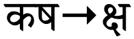
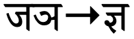
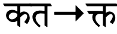
Conjuncts formed by ligation.
Conjuncts with ra
When र [U+0930 DEVANAGARI LETTER RA]follows another consonant, it is typically rendered as a small, diagonal line to the left, eg. क्र ग्र भ्रAfter 6 consonants, however, it is rendered as an upside-down v shape below, ie. ट्र ठ्र ड्र ढ्र ड़्र छ्रAfter त [U+0924 DEVANAGARI LETTER TA] it produces त्र
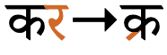
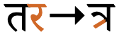
Conjuncts formed by a following ra.
When ra precedes another consonant, it is rendered as a small hook above the vertical line in the cluster, eg. र्कr͓kर्लr͓lWhere it precedes a cluster using half-forms, it is aligned with the vertical line of the trailing consonant, eg. र्स्पr͓s͓pHowever, if there is a spacing vowel sign with a vertical line to the right of the cluster, it aligns with that, eg. र्काr͓kāर्कीr͓kī(This illustrates how the basic units of the script are orthographic syllables.)
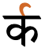
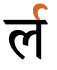
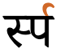
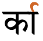
The horizontal position of the hook for conjuncts formed by a preceding ra follows the main vertical bar of the syllable.
Visible virama
The ability to form conjuncts depends on the richness of the font. Where a font is not able to produce a half-form or ligature, etc., it will leave a visible virama glyph below the initial consonant(s) to indicate the missing vowel sound, as illustrated in fig_virama_visible.
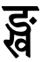
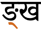
A consonant cluster for which there exists a conjunct form in the Tiro Hindi font (left), but not in the Noto Serif Devanagari font (right). The latter indicates that this is a cluster by showing a visible virama.
Examples of clusters that the default font used for this page is unable to render as a conjunct form:
स्विट्ज़रलैंडरीट्वीट
An important consequence of representing clusters in this way is that the syllable boundaries are different. For example, if we follow the cluster with a left-positioned vowel sign, it will now appear after the virama, rather than before the cluster, eg. compare the position of the pre-base vowel sign in fig_virama_vowel. This change is also reflected in segmentation of the text for line-breaking, inter-character spacing, etc.
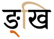
Positioning of the pre-base vowel sign in relation to the same consonant cluster where a conjunct forms (left) vs. where a visible virama appears (right).
A visible virama may also be used with a single consonant, to indicate that it is to be pronounced without the inherent vowel, eg. क्k
Consonant lengthening
Lengthened (geminated) consonants are indicated in the script using the same mechanisms as for clusters.
Most native consonants may be lengthened, but not bʱ, ɽ, ɽʱ, or ɦ. Geminate consonants are always medial and preceded by one of ə, ɪ, or ʊ.wp,#Consonants
Using ZWJ & ZWNJ
ZWNJ It's possible to prevent the formation of conjuncts usingU+200C ZERO WIDTH NON-JOINER (ZWNJ). For example:
ZWJ To produce a half-form, rather than a ligated form, use U+200D ZERO WIDTH JOINER (ZWJ). For example,
क्ष → क्ष
It can also be used to produce standalone half-forms (for educational text) such as
घ्
Consonant sounds to characters
This section maps Hindi consonant sounds to common graphemes in the Devanagari orthography.
Where there are two columns, the right column shows aspirated sounds.
Click on a grapheme to find other mentions on this page (links appear at the bottom of the page). Click on the character name to see examples and for detailed descriptions of the character(s) shown.
ॐ [U+0950 DEVANAGARI OM] is a religious symbol used in both Hinduism and Buddhism.
Encoding choices
This section looks at alternative strategies for typing and storing vowel signs and independent vowels used by Hindi, taking into consideration the effects of normalising the text using Unicode Normalisation Form D (NFD), and Normalisation Form C (NFC).
Vowel signs
The single code points on the left should be used, and not the sequences on the right, because they are not made the same by normalisation. Therefore the content will be regarded as different, which will affect searching and other operations on the text.
The way the Unicode Standard recommends to type and store graphemes with nuktas is a little unusual for Devanagari. Here we look at alternative strategies for all uses of the nukta in the Devanagari block (usage recommendations for Hindi are given in the section nukta), and consider the effects of normalising the text using Unicode Normalisation Form D (NFD), and Normalisation Form C (NFC).
For the following alternatives (unusually) the decomposed form is recommended by the Unicode Standard. NFC does not recombine the parts into precomposed characters. Instead, normalisation produces decomposed forms for both approaches using NFC and NFD, so both approaches are canonically equivalent.
The next batch of characters produces precomposed characters under NFC, and decomposed under NFD. Both approaches are therefore canonically equivalent, even though the behaviour is different. In this case, the Unicode Standard recommends using the precomposed form.
In practise, it's hard to envisage content authors being aware of, let alone respecting, rules about whether they should use precomposed or decomposed forms. Keyboards or other input mechanisms, or perhaps sometimes applications that automatically normalise can perhaps guide users to the recommended practise, but it's likely that Devanagari text will always contain a mixture of forms for these graphemes.
Numbers, dates, currency, etc
Devanagari has a set of digits, that can be referred to as 'hindi' numerals. They are used regularly.
०␣१␣२␣३␣४␣५␣६␣७␣८␣९
The CLDR standard-decimal pattern is #,##,##0.###. The standard-percent pattern is #,##,##0%.cldr
An interesting feature of large numbers written in India is that they apply groupings of two, rather than three, digits between commas (even when using european digits).
20,00,000
Two million, written with Indian comma separators.
Currency
The CLDR standard format for currency is ¤#,##,##0.00.cldr
₹ [U+20B9 INDIAN RUPEE SIGN] is the symbol introduced by the Government of India in 2010 as the official currency symbol for the Indian rupee (INR).u
It is distinguished from ₨ [U+20A8 RUPEE SIGN], which is an older symbol not formally tied to any particular currency.u Follow that link for more information about the rupee.
Text direction
Text is normally written horizontally, left to right.
Within a Hindi word, spacing glyphs are typically joined together at the top bar (shirorekha).
दिल्ली
The top bar extends across or through most spacing letters, including both consonants and vowels, but some letters create a gap in the line (while still joining at either side). Such a letter can be seen in the following example.
हाथ
Characters that create these gaps include digits and the following:
ओ␣औ␣अ␣आ␣थ␣भ␣ध␣श
Alignment of the top bar may be appropriate when mixing text of different sizes (see initials). Also, when Hindi text is mixed with another script that also has a top bar, such as Bengali, the top bars of both scripts may need to be aligned.
Context-based shaping & positioning
Context-based shaping
The shape of a character when displayed can vary, often dramatically, according to the context.
One very common example in most indic scripts is the handling of 'conjunct consonants', ie. groups of consonants with no intervening vowel sounds. Since consonants in indic scripts have an inherent vowel sound, when two consonants are combined this way you have to indicate that the vowel of the initial consonant is suppressed. This is normally done by altering the shape of the first consonant, or merging the shape of the two consonants.
To tell the font to do this, in Unicode you add ्[U+094D DEVANAGARI SIGN VIRAMA] between the two consonants. This produces the change in the shapes of the glyphs that indicates to the reader that this is a conjunct. The actual outcome is font dependent. For the word below which contains a conjunct of two ल[U+0932 DEVANAGARI LETTER LA] characters (making a long L sound) you may see a 'half-form' used for the first LA (shown on the left) or you may see (as shown on the right) a ligated form.
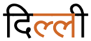
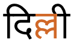
Alternative representations of a geminated l consonant.
There are other types of context-based shaping, which are font specific. One is shown below. The width of the glyph for ि[U+093F DEVANAGARI VOWEL SIGN I] differs according to the base character to which it is attached.
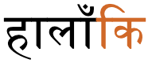
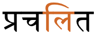
Context-sensitive shaping of the glyph for i.
Multiple combining characters
Diacritics regularly combine with a vowel sign attached to the same consonant or consonant cluster. The example below shows two combining characters that are positioned above the base character in a very common form of the verb 'to be'. One is ै[U+0948 DEVANAGARI VOWEL SIGN AI], and the other the nasalisation mark ं[U+0902 DEVANAGARI SIGN ANUSVARA].
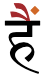
Multiple combining characters over one base character.
Context-based positioning
Combining characters need to be placed in different positions, according to the context.
The example on the left below displays the dot (anusvara) immediately over the long vertical stroke. The example to the right has moved the dot slightly to the right in order to accomodate the vowel sign.
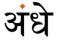
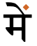
Context-sensitive placement of the anusvara diacritic.
In the following the image to the left shows the normal position of ू[U+0942 DEVANAGARI VOWEL SIGN UU], beneath the first letter. The example on the right shows that character displayed higher up and to the right when combined with the base character र[U+0930 DEVANAGARI LETTER RA].
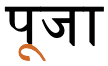
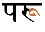
Context-dependent placement of the glyph representing ra.
Typographic units
Word boundaries
Words are separated by spaces.
Devanagari has hyphenated words – mainly conjoined nouns,i eg.
लाभ-हानिमाता-पिता
Graphemes
This section is still undergoing research and development.
Grapheme clusters alone are not sufficient to represent typographic units in Hindi in all circumstances. Conjuncts are common and must not be split apart by edit operations that visually change the text (such as letter-spacing, first-letter highlighting, and in-word line breaking). For those operations one needs to segment the text using orthographic syllables, which string grapheme clusters together with ् [U+094D DEVANAGARI SIGN VIRAMA],
which has an Indic Syllabic Category of Virama.
However, Hindi needs to interpret the virama (halant) in two different ways for segmentation: (1) as a simple vowel-killer, and (2) as a conjunct initiator, depending on whether or not it is rendered visibly.
Grapheme clusters
Base Combining_mark* Joiner?
Combining marks may include zero or more of the following types of character.
Any of the above may occur after a consonant base. Independent vowel bases usually only have final consonant marks. There is usually only one vowel sign per base consonant. A virama only occurs after a consonant and optional nukta.
The following examples show a variety of grapheme clusters:
Click on the text version of these words to see more detail about the composition.
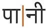
पानी
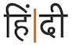
हिंदी
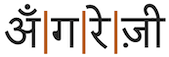
अँगरेज़ी
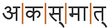
अकस्मात्
Note how grapheme clusters segment the parts of a conjunct after the virama. This is not always desirable (see orthographicS just below).
Larger typographic units
(Consonant Nukta? Virama)* Grapheme_cluster
Hindi commonly stacks or conjoins glyphs, to form conjuncts. The conjuncts represent consonant clusters or gemination.
Grapheme clusters terminate after a sequence of marks that ends with a virama, but editorial operations that change the visual appearance of the text, such as letter-spacing, first-letter highlighting, in-word line-breaking, and justification, should never split conjunct forms apart. For this reason, an alternative way of segmenting graphemes is needed. This may not apply, however, for some other operations such as cursor movement or backwards delete.
Where conjuncts appear, a typographic unit contains multiple grapheme clusters. The non-final grapheme clusters all end with ् [U+094D DEVANAGARI SIGN VIRAMA], and the final grapheme cluster begins with a consonant.
The following are examples. Some examples were shown in the previous section: here the conjunct is treated as a single typographic unit.
Click on the text version of these words to see more detail about the composition.
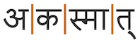
अकस्मात्
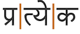
प्रत्येक
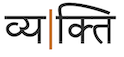
व्यक्ति
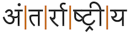
अंतर्राष्ट्रीय
Note that consonant clusters aren't always rendered as conjuncts, and in those cases the individual letters remain as separate graphemes. For example, consonants without an inherent vowel may be written using a consonant letter on its own at the end of a word or in other locations (see novowel), eg.
Click on the text version of these words to see more detail about the composition.
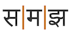
समझ
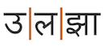
उलझा
On the very rare occasions when a virama needs to be visible even though it is followed by another base, an invisible character must be added to prevent it joining with the following base. U+200C ZERO WIDTH NON-JOINER can achieve that.
Complicating factors
Behaviour is font-dependent. If a font doesn't have a conjunct form for a particular combination of characters it will make the virama visible. The following shows an example produced by the default font used for this page, and the segmentation you would normally expect, and then compares it with the result for a font that does have the ability to form a conjunct..
Click on the text version of these words to see more detail about the composition.
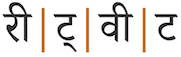
रीट्वीट
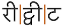
Same word with a different font.
What's important to notice here is that it is normally possible to break a line after the virama when the virama is visible. This is currently difficult to manage because the decision as to whether the text is segmented into 2 graphemes or one depends only on the capabilities of the font used (ie. the rendered result); the code point sequence is identical for both cases, and gives no clues to which approach to segmentation is applicable.
Visible viramas can also affect vowel sign positioning. For the purposes of illustration, let's take the previous example and replace the vowel signs with ones that are displayed before the base. Observe the placement of the pre-base vowel in fig_prebase_position. In the conjunct form on the left, the vowel sign is rendered to the left of the whole conjunct. If the sequence is not rendered as a conjunct, as in the second example, the pre-base glyph precedes the VA, not the TA.
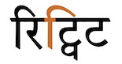
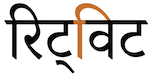
Placement of pre-base vowel glyphs.
Browser behaviour
Test in your browser.The words test units that equate to grapheme clusters only, and others that include conjuncts. First, the text is displayed in a contenteditable paragraph, then in a textarea. Results are reported for Gecko (Firefox), Blink (Chrome), and WebKit (Safari) on a Mac.
अँगरेज़ीअकस्मात्अंतर्राष्ट्रीयउलझा
Cursor movement.Move the cursor through the text.
Gecko steps through the whole text using grapheme clusters. It takes 2 or more steps (depending on the number of GCs) to get through the conjuncts, one grapheme cluster at a time. In some cases, especially with RA, the cursor may look as if it is in the wrong position. Blink and WebKit step through all words using the orthographic syllables described here (ie. they step over a stack and all associated combining characters in one jump).
Selection.Place the cursor next to a character and hold down shift while pressing an arrow key.
The behaviour is the same as for cursor movement.
Deletion. Forward deletion works in the same way as cursor movement. The backspace key deletes code point by code point, for all browsers.
Line-break.See this test. The CSS sets the value of the line-break property to anywhere. Change the size of the box to slowly move the line break point.
Gecko appears to segment on grapheme cluster boundaries, except for inside the 3rd word, where it wraps first a vowel sign, then wraps the rest of the conjunct plus the previous grapheme cluster as a single unit. WebKit and Blink both wrap on orthographic syllable boundaries.
Punctuation & inline features
Phrase & section boundaries
!␣,␣:␣;␣.␣।␣॥␣?␣—
Devanagari uses standard Latin punctuation, but also has its own version of a full stop, ।[U+0964 DEVANAGARI DANDA]. Most style guides recommend to use no space before this punctuation, but use space after.
The dandas are commonly used in Sanskrit and Prakrit poetry, and the double danda may be both before and after benedictory headings, rest-stops, etc., eg. ॥ श्रीसीताराम ॥
Both of these code points are also used in a number of other indic scripts.
Bracketed text
(␣)
Hindi commonly uses ASCII parentheses to insert parenthetical information into text.
Hindi texts typically use quotation marks. Of course, due to keyboard design, quotations may also be surrounded by ASCII double and single quote marks.
The default quote marks for Hindi are “ [U+201C LEFT DOUBLE QUOTATION MARK] at the start, and ” [U+201D RIGHT DOUBLE QUOTATION MARK] at the end.cldr
When an additional quote is embedded within the first, the quote marks are ‘ [U+2018 LEFT SINGLE QUOTATION MARK] and ’ [U+2019 RIGHT SINGLE QUOTATION MARK].cldr
Emphasis
Italicisation and bolding are not traditionally used for highlighting text in Devanagari.
Devanagari is normally wrapped at word boundaries.
Line-edge rules
As in almost all writing systems, certain punctuation characters should not appear at the end or the start of a line. The Unicode line-break properties help applications decide whether a character should appear at the start or end of a line.
The following list gives examples of typical behaviours for characters used in modern Hindi. Context may affect the behaviour of some of these and other characters.
Click on the Hindi characters to show what they are.
“ ‘ ( should not be the last character on a line
” ’ ) ? ! ।॥ % should not begin a new line
₹ should be kept with any number, even if separated by a space or parenthesis.
Line breaking should also not move a danda or double danda to the beginning of a new line, even if they are preceded by a space character. These punctuation characters should behave in the same way as a full stop does in English text.
In-word line-breaks
Devanagari text can be hyphenated during line wrap, though it is not very common (unlike several south Indian scripts). This is partly because Hindi contains mostly short words.st
Hyphenation is much more common when writing Sanskrit in the Devanagari script, because words tend to be much longer.
Hyphenation adds a hyphen at the end of the line when a word is broken.
Text alignment & justification
Justification is done, principally, by adjusting the space between words. (I have no information about whether high-end systems also adjust inter-character spacing slightly if inter-word doesn't resolve the issue, or to improve aesthetics.)
Text spacing
This section looks at ways in which spacing is applied between characters over and above that which is introduced during justification.
Inter-character spacing is sometimes applied to Hindi text, despite the fact that the top bar is usually joined up. When spacing is applied, the top bar appears broken. Such spacing may appear in decorative text in banners, newspapers, etc.i,#h_letter_spacingfig_text_spacing shows an example for the name plate of a museum.
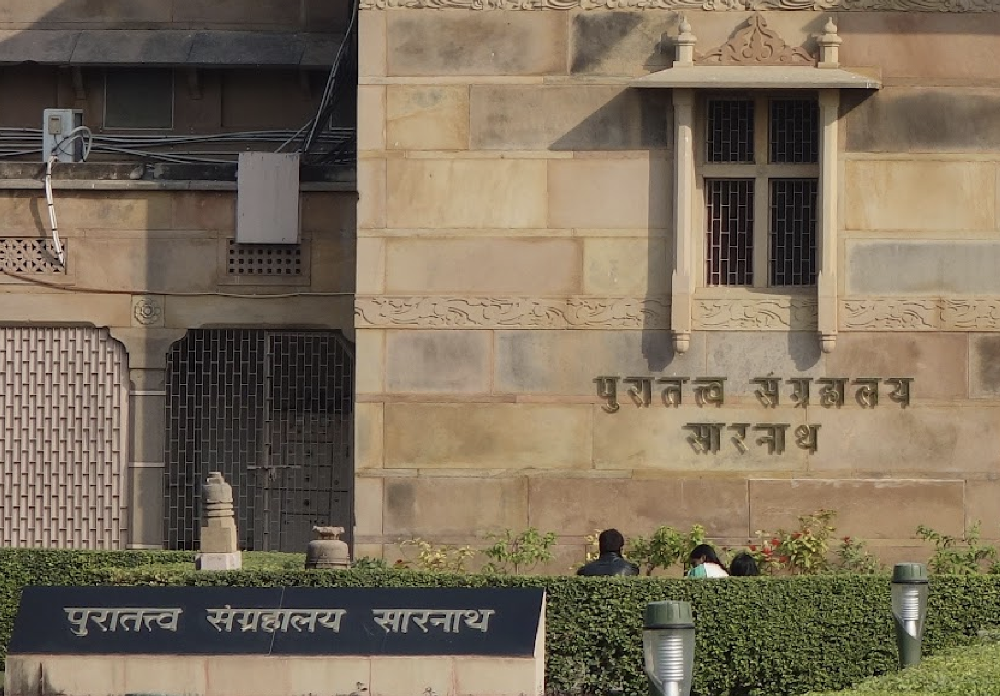
Letter-spacing applied to the name plate of a museum.
Baselines, line height, etc.
Devanagari has a so-called 'hanging' baseline (see the red line in fig_baselines).
fig_baselines shows glyphs from Noto Serif fonts. The basic height of Devanagari letters, and the hanging baseline, is just slightly higher than the Latin x-height, however ascenders and vowel signs, especially when accompanied by tone marks, push slightly beyond the Latin ascenders and descenders. The basic letter size for this font means that the bottom edge of basic letters sits on the alphabetic baseline used by the Latin letters.
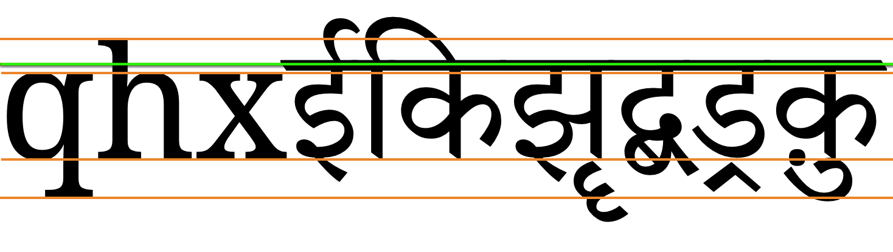
Font metrics for Latin text in the Noto Serif font compared with Hindi glyphs in the Noto Serif Devangari font.
One situation where the hanging baseline is clearly used to align text is for paragraph-initial letter highlighting, where the top bar of the enlarged initial letter is aligned with the top bar of the first line of smaller paragraph text (see initials).
Counters, lists, etc.
You can experiment with counter styles using the Counter styles converter. Patterns for using these styles in CSS can be found in Ready-made Counter Styles, and we use the names of those patterns here to refer to the various styles.
The modern Hindi orthography uses numeric and alphabetic styles.
Numeric
The devanagari numeric style is decimal-based and uses these digits.rmcs
०␣१␣२␣३␣४␣५␣६␣७␣८␣९
Examples:
१␣२␣३␣४␣११␣२२␣३३␣४४␣१११␣२२२␣३३३␣४४४
Alphabetic
The hindi alphabetic style for the Hindi language uses these letters.
The most common approach to writing lists in Hindi uses a full stop as a suffix.
Examples:
१. २. ३. ४. ५.
Separator for Hindi list counters: full stop + space.
Styling initials
Devanagari content does sometimes enlarge the first part of the first word in a paragraph, in a similar way to drop caps. Instead of enlarging just the first letter in the word, it is normal to enlarge the first syllable. If the first character is the beginning of a conjunct, the whole conjunct should be included in the styling.
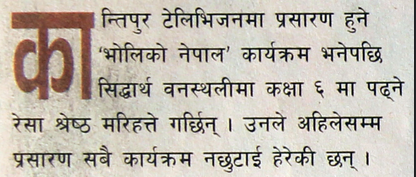
Enlarged syllable styling at the start of a paragraph.
In theory, the top line of the characters should align in the large text and the following first line, however it is possible to easily find examples where this is not accurate.
It is very common to see such initial-syllable enlargement centred inside a coloured box.
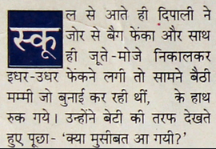
Enlarged syllable styled inside a coloured box.
In the boxed style, the box itself is usually aligned with the top of the first line of text and the bottom of the last, and the highlighted character(s) are centred horizontally and vertically in the box.
In both styles shown above, any punctuation such as opening quotes and opening parentheses should also be included in the initial styling.